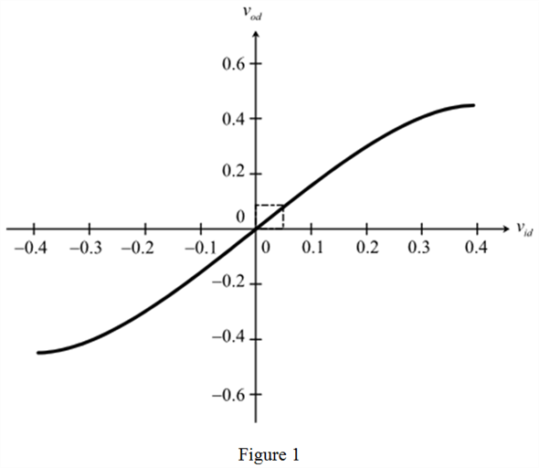
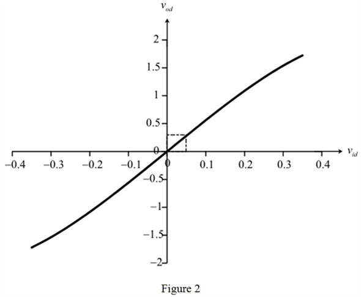
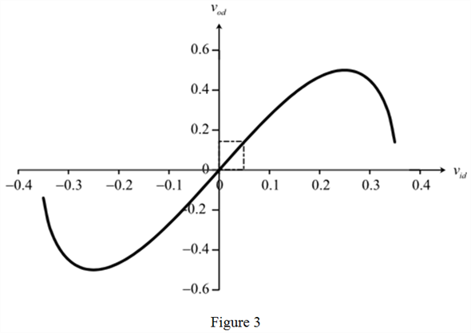

Step 1:
(a)
Refer to Figure 8.1 in the textbook for a basic metal oxide semiconductor differential-pair configuration.
Consider the following expressions for the supply voltages, :
Here, the common mode voltage is,  and
and
The differential input voltage is  .
.
Recall equations 8.23 and 8.24 in the textbook for the drain currents.
Here, the current is  , and
, and
The overdrive voltage is  .
.
Step 2:
Write the expression for the output differential voltage.
The expression for the drain voltage is,

Therefore,
Substitute the expression of .
Thus, the expression for the output differential voltage,  in terms of the input differential voltage,
in terms of the input differential voltage,  is, .
is, .
Step 3:
(b)
Assume the current, , and resistance, .
Select the proper values of to sketch the voltage transfer characteristic (VTC), that is the curve between  and
and  , over the following range:
, over the following range:
Assume 0.25 V for  .
.
Recollect the relation between .
Substitute 0.5 mA for  ,
,  for
for  , 0.25 V for
, 0.25 V for  .
.
Step 4:
Draw the voltage transfer characteristic.

Step 5:
Rewrite the expression that relates the output and input differential voltage.
Observe from the expression that there is a square root term in the right hand side of the expression. The square and root are non-linear terms. The only linear term available in the expression is,
Otherwise, the fraction under the square root vanishes near origin. Therefore, the slope of the nearly linear portion of the voltage transfer characteristic near the origin is,
Step 6:
Substitute 0.5 mA for  ,
,  for
for  , 0.25 V for
, 0.25 V for  .
.
Observe from the voltage transfer characteristic that the output differential voltage is 0.1 V for the input differential voltage of 0.05 V. Find the differential voltage gain.
Thus, the slope of the nearly linear portion of the voltage transfer characteristic near the origin, that is the differential voltage gain,  is .
is .
Step 7:
(c)
Consider that the bias current,  is doubled.
is doubled.
Note that  is the voltage at which the transistor pair operate in the equilibrium, that is the drain currents equal to
is the voltage at which the transistor pair operate in the equilibrium, that is the drain currents equal to  . Refer to equation 8.5 in the textbook for the relation between .
. Refer to equation 8.5 in the textbook for the relation between .

If the bias current doubles, the overdrive voltage increases by times.
Rewrite the expressions.
Step 8:
Simplify the expressions further.
Rewrite the expression for the output differential voltage.

The expression for the drain voltage is,
Therefore,

Step 9:
Substitute the expression of .
Thus, the expression for the output differential voltage, in terms of the input differential voltage, is, .
Step 10:
Substitute 1 mA for  ,
,  for
for  , 0.25 V for
, 0.25 V for  to draw the voltage transfer characteristic.
to draw the voltage transfer characteristic.
Draw the voltage transfer characteristic.

Step 11:
Observe from the voltage transfer characteristic that the output differential voltage is 0.28 V for the input differential voltage of 0.05 V. Find the differential voltage gain.
Thus, the differential voltage gain,  is . Observe that the voltage gain difference with earlier is more.
is . Observe that the voltage gain difference with earlier is more.
Step 12:
(d)
Consider that the width to length ratio,  is doubled.
is doubled.
Note that  is the voltage at which the transistor pair operate in the equilibrium, that is the drain currents equal to
is the voltage at which the transistor pair operate in the equilibrium, that is the drain currents equal to  . Recall the relation between .
. Recall the relation between .

If the width to length ratio doubles, the overdrive voltage decreases by times.
Rewrite the expressions.
Simplify the expressions further.
Step 13:
Rewrite the expression for the output differential voltage.
The expression for the drain voltage is,
Therefore,
Substitute the expression of  .
.
Thus, the expression for the output differential voltage,  in terms of the input differential voltage,
in terms of the input differential voltage,  is, .
is, .
Step 14:
Substitute 0.5 mA for  ,
,  for
for  , 0.25 V for
, 0.25 V for  to draw the voltage transfer characteristic.
to draw the voltage transfer characteristic.
Step 15:
Draw the voltage transfer characteristic.

Step 16:
Observe from the voltage transfer characteristic that the output differential voltage is 0.14 V for the input differential voltage of 0.05 V. Find the differential voltage gain.
Thus, the differential voltage gain,  is . Observe that the voltage gain difference with earlier is less.
is . Observe that the voltage gain difference with earlier is less.